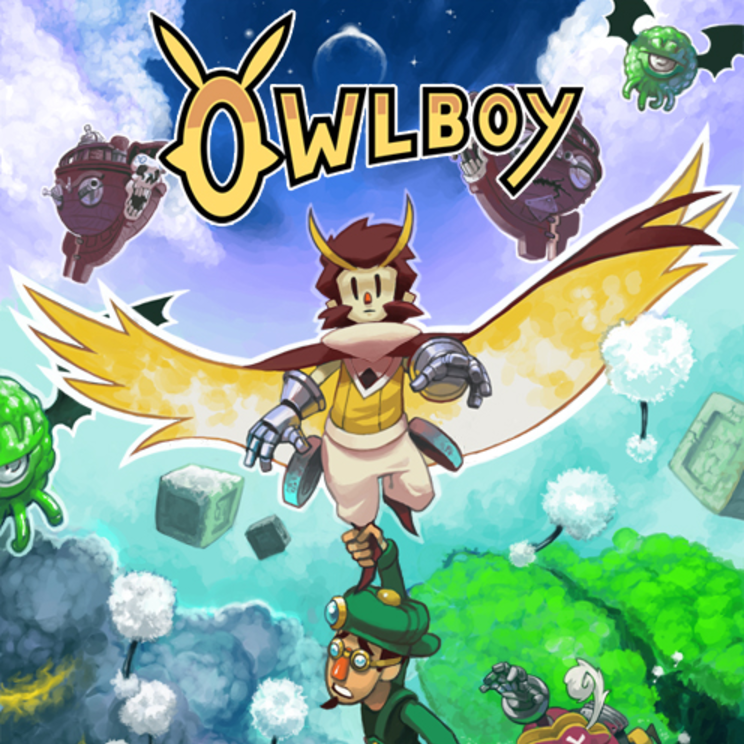

Owlboy Review
Chloi Rad
2 November 2016 6:00 pm
Owlboy is a game about weakness, but for its lovable cast of characters, individual weaknesses only strengthen their bond as a team of misfits seeking to save the world.
This theme gracefully weaves itself throughout their thrilling, dungeon-diving adventures, but manifests most strongly in the creative approach to its retro 2D, Metroidvania-style combat and exploration that brings both variety and charm to every moment of Owlboy’s roughly 10-hour journey.
Owlboy often goes the extra mile to rationalize its mechanics in the context of its characters, world, and lore – an effort that brings all of its elements together in a nice, neat package. You can see this most clearly in Owlboy’s distinctive movement and combat. Our hero, a young student named Otus, can’t do much on his own except fly, roll, and spin. Zooming around the gorgeous, detailed, and moderately-sized open world feels straightforward, which kept me in comfortable control of Otus at all times. Owlboy’s heroic score made soaring through the skies especially exciting. But despite its tight and fun controls, this limited moveset won’t always get Otus out of a bind when things start to get dangerous. That’s where things get interesting.
Otus’ weakness is a key part of his character, so highlighting his failures and vulnerabilities during dialogue-heavy portions and then turning him into a gun-toting superhero once you enter a dungeon wouldn’t make sense. Instead, Otus must rely on his allies and their unique abilities to fill in where he’s lacking.
His self-proclaimed “best bud” Geddy, for instance, is armed with a tiny short-ranged, but quick-shooting pistol that can blast through wood and some types of rock, and take out most enemies. Picking Geddy up, flying him through dungeons, and shooting at enemies with his blaster controls with ease on a gamepad, like a simplified twin-stick shooter. You can cycle between buddies instantly using a teleportation device found in a dungeon early on, which adds some internal logic to the convenience of what is essentially switching weapons and abilities on the fly. (Sometimes literally!) But having those characters there to represent each ability and contextualize their unique contributions to your adventure just adds to Owlboy’s immense charm and personality.
A good variety of enemies, all with different behaviors, weaknesses, and interesting placements within each dungeon, prevent combat-heavy sections from becoming repetitive. Most enemies avoid “bullet-sponge” syndrome, and instead have some creative way of being taken down that can sometimes earn you a treasure chest if done properly. Instead of rapid firing into the group of fire gators, you can use the tiny cloud you used to solve a puzzle earlier to rain water down on them, turning them to stone and then spin-attacking to shatter their statues. Rather than shooting at the angry, rock-throwing cavemen, you can spin to deflect their projectiles back at them, playing a game of aggressive ping-pong before they eventually give in and explode. Trying to strictly play Owlboy like a conventional side-scrolling shooter won’t feel as satisfying as it does to experiment with objects and enemies in its world to uncover these new outcomes and rewards — but that doesn’t mean going in with your buddy’s gun blazing can’t also be the correct approach for certain areas.
Obstacles in each area range from simply hunting for switches to open doors, to slightly-more complicated balancing acts involving timed levers and mandatory stealth. While its puzzles never get too complicated, they’re fun by virtue of sheer variety. Boss fights are especially clever. While it’s nothing new for bosses to have weak points, there’s a pleasing amount of new ways you must learn to deal with each one — whether it’s manipulating its movement, the environment, or deftly switching between buddies to get in a winning combo. While I would have preferred a more substantial difficulty spike towards the end, the fact that Owlboy always had something new to throw at me was a reward in itself. All of this, plus a handful of surprising one-off sequences, makes each moment in Owlboy feel incredibly fresh.
In one particularly-thrilling chase scene, you need to swap out buddies on the run to burst through obstacles — Geddy’s pistol for crumbling rock, and another buddy’s powerful musket to burn through tough vines. Waterfalls that knock Otus out of the sky turn segments of his daring escape into a frantic platformer. This sequence contrasts strongly against the slower-paced puzzling of the earlier temple or the tense late-game stealth segments, but it’s all just as good.
Owlboy’s story begins as a simple tale of warding off faceless sky pirates and becomes something much more exciting as it unfolds, but it kept me engaged from the start thanks to the intricacy of its fantastical world and characters. The built-in mythology of its majestically-detailed ruins, temples, and towns burst with imagination, like something straight out of a Studio Ghibli film. Mighty stone monuments of ancient civilizations stand in stark contrast to the cartoonishly-clunky steam-powered machinery of its hidden laboratories and cloud-sailing pirate ships, with the remarkably-expressive animations of their sputtering gears and valves. And while day and night cycles that occur outside are purely aesthetic, they lend a dreamlike beauty to the floating islands as the sky fades from the lovely oranges and yellows of dawn to the starry purple of twilight.
A wealth of treasure and collectibles scattered around its Metroidvania-style world, rooted in the secrets of its lore, adds extra incentive and reward for probing its every corner when there’s some downtime between quests. Even after 10 hours, I left a few of these core mysteries unsolved — particularly one involving large owl tokens hidden around the world, and another that seems to hint at a secret code that needs deciphering. I’m eager to return and see what these things do. Owlboy retains a save from right before the final boss even after you’ve finished the game, allowing you to return to the main world to complete anything you might’ve left unfinished without needing to start over. While extremely convenient, I personally want to start from the beginning and take my time collecting every last one of its finite coins, and gawking at some of its particularly-gorgeous scenery.
The eye-catching pixel art style is put to equally effective use on Owlboy’s many characters, whose sprites come to life with a range of endearing animations and expressions. Otus can’t speak, but his little gestures — whether it’s a triumphant smile to welcome a new friend or a sudden bout of shivers at an unfortunate turn of events — endow him with a surprising amount of character. While Otus himself remains silent, other characters around him always have plenty of well-written dialogue, imbued with strong underlying themes that make the story-heavy breaks between exploration and combat feel like substantial parts of the adventure.
I felt invested in the personal growth and development of Otus and his friends because of their many exhilarating victories and devastating failures. When Geddy storms off after an upsetting turn of events, I felt his absence as a character more than a temporarily lost ability. It was another source of guilt and shame for the clumsy Otus, who only wants to protect the people around him even when it seems beyond his powers to do so. Seeing Otus and his friends (and even his former enemies) overcome their differences and their own deficiencies to ultimately do good in the world was an emotionally powerful journey. The fact that these themes can so smoothly run parallel to an equally-compelling adventure full of clever action and daring exploits is a testament to the truly beautiful work of art that developer D-Pad Studio has created.
The Verdict
Owlboy shines thanks to surprisingly varied, Metroidvania-style gameplay and a charming cast of unlikely heroes whose bittersweet journey is among the best I’ve experienced in recent years. Its remarkably detailed pixel art makes every scene more breathtaking than the last, but it’s the relationships between characters in both story and gameplay that makes Owlboy something truly special.